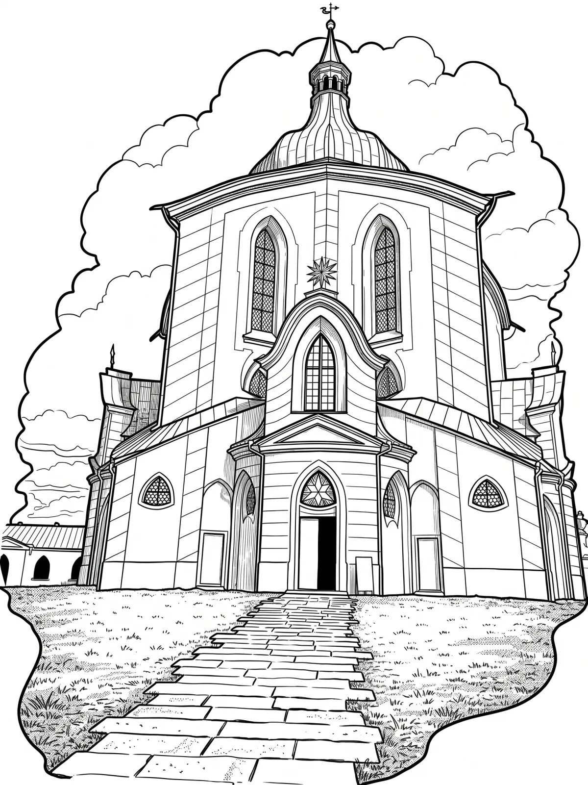

Zelená Hora
Poutní kostel Svatého Jana Nepomuckého na Zelené hoře ve městě Žďár nad Sázavou patří mezi nejvýznamnější stavby barokní gotiky architekta Jana Blažeje Santiniho-Aichela. Tento vrcholný Santiniho výtvor byl roku 1994 zařazen na Seznam světových kulturních a přírodních památek UNESCO.
Více na Wikipedii